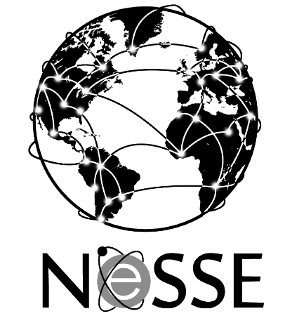

Profile
I am a Ph.D. student at the University of York interested in pursuing a career at the intersection of science, industry, and policy, focusing on sustainable chemistry. Having performed research for pharmaceutical corporations I am interested in the drivers and the obstacles for the sustainable evolution of this sector.
Some facts about me
- 45000 km flown
- 4 languages spoken
- 3 published papers
- 2 degrees
- 2612126 ideas
- 4 conferences attended
If you're passionate about green chemistry too we should definitely get in touch. Check out my Twitter log and follow me, find my Linkedin profile, get to know greenSTEMS Project either by hitting like on its Facebook page or visiting its blog on Wordpress.
Cheers or some other form of goodbye,
Giulia
